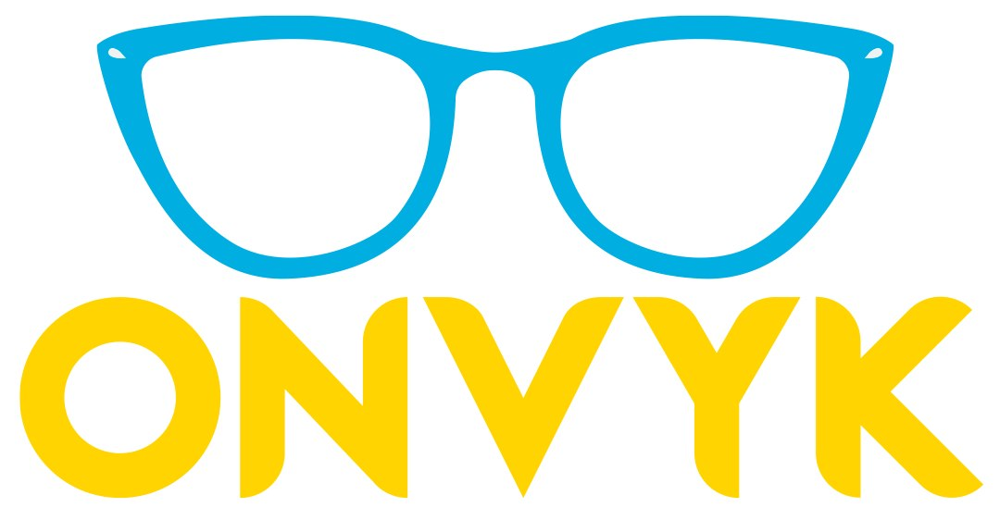

Lo que acuerdan, en marcha
«¿Qué quedamos en hacer esta semana?»
Guardará los acuerdos de cada sesión y te ayudará a avanzar en ellos, paso a paso, sin que dependas de tu memoria ni de notas sueltas.

Desde el GarajeTu asesoría con Jesús, más organizada
Tu asistente de ONVYK / Desde el Garaje no reemplaza tu asesoría con Jesús: la hace mejor. Te acompañará entre sesiones para que conviertas ideas en contenido con tu voz, construyas una rutina de creación y llegues a cada encuentro con avances claros.
Le escribirás lo que necesitas. Te ayudará a darle forma. Tú decidirás qué hacer con ello.
Así mejora tu asesoríaDe una idea a un primer borrador
Un primer texto para presentar tu propuesta, que podrás ajustar hasta que suene a ti.
Ejemplo de uso previsto.
Una idea tuya será suficiente para empezar.
Tu asesoría, mejor que nunca
Esto no te aleja de tu asesoría con Jesús: es lo contrario. El asistente sostiene el trabajo de todos los días para que cada sesión rinda el doble.
Guardará los acuerdos de cada sesión y te ayudará a avanzar en ellos, paso a paso, sin que dependas de tu memoria ni de notas sueltas.
Jesús también habla con el asistente desde su propio chat y puede ver cómo vas cuando lo necesite, sin esperar a que le mandes nada. Tus conversaciones no se comparten. Así la sesión no se gasta en ponerse al día: se dedica a pensar en grande y a decidir lo siguiente.
Tendrás a la vista lo que ya hiciste, lo que está pendiente y lo que aprendiste. Tu progreso deja de estar disperso.
Tu primera habilidad
Lo primero que vas a construir no es una publicación: es el hábito de crear. Empezaremos con una rutina pequeña, a tu medida, y la iremos haciendo crecer con Jesús.
En tu día a día
Trabajarás con él por mensajes de texto. Podrás empezar por algo tan cotidiano como una publicación pendiente o una idea que quieras retomar.
Te ayudará a escribir y pulir borradores tomando como referencia tu criterio y tus publicaciones anteriores. Tú ajustarás el texto y decidirás cuándo publicarlo.
Podrá guardar notas de trabajo y recuperar ideas y borradores para que puedas continuar donde lo dejaste.
Buscará información pública en internet y te traerá lo útil con sus fuentes. Tendrás referencias para pensar tu propuesta, sin empezar la búsqueda desde cero.
Te ayudará a interpretar las cifras de tus publicaciones que le facilites y a explorar posibles oportunidades. Distinguirá entre un tema que gusta y una oferta por la que alguien quiere pagar.
Lo que puede abrir para tu negocio
Una idea de contenido también podrá ser el comienzo de un taller, un nuevo formato o una propuesta que quieras explorar. El asistente te ayudará a pensar cómo comprobar si interesa antes de darla por hecha.
Jesús podrá pensar contigo en posibilidades para tu negocio. Él también conversa con el asistente sobre tu avance y tu negocio, nunca sobre tus conversaciones ni tus pacientes.
Si Jesús te propone algo, podrás elegir «Me interesa» o «Ahora no». Si te interesa, el asistente podrá ayudarte a prepararlo. Tú marcarás el rumbo.
Con tranquilidad
Este será un espacio para tu contenido y tu negocio. Lo clínico y los datos de pacientes quedarán fuera: el asistente no atenderá pacientes ni dará consejo clínico.
Jesús tiene su propio chat con el asistente para hablar de tu avance y de tu negocio cuando quiera. Lo que se protege siempre: tus conversaciones y todo lo de tus pacientes. Eso no lo verá nadie.
Cada publicación saldrá de tus manos: tú la aprobarás y la publicarás.
Cuando esté listo, empecemos por algo tuyo
No necesitarás tenerlo todo claro. Podrás probarlo con una petición sencilla:
Lo iremos probando contigo, a tu ritmo.
Y el nombre del asistente lo elegirás tú.